Осмотрите панели при дневном свете
Осматривайте каждую панель до укладки и по ходу сборки. Если заметили повреждение или видимое отклонение от обычного вида панели, отложите её и верните поставщику для замены.
Сверьте декор, артикул, партию и количество упаковок. Уделите внимание кромкам и замкам.
Проверьте основание
Основание должно быть сухим, чистым и без трещин. Проверьте, что оно образует сплошной несущий слой, выдерживает сжатие и растяжение, а на поверхности нет разделительных веществ. Пропылесосьте пол.
Поставьте рейку на выступающие точки и измерьте самый глубокий просвет под ней. При расстоянии 1 м между точками опоры просвет должен быть не более 2 мм. Выровняйте участки, где он больше. При обнаружении непригодного основания укладчик обязан письменно сообщить заказчику о дефектах до начала работ.
Удалите отслаивающиеся остатки старого покрытия и непрочные выравнивающие слои. На неровном основании панели прогибаются даже с толстой мягкой подложкой. При ходьбе это увеличивает нагрузку на замки.
На что можно укладывать

Для плавающей укладки подходят стяжки, в том числе с водяным подогревом, древесно-стружечные, древесно-волокнистые плиты и ОСП. Существующие покрытия из ПВХ, линолеума, природного камня или керамической плитки можно оставить, если основание отвечает тем же требованиям.
Ковры, ковролин и другие текстильные покрытия снимите. Завод исключает их как основание и предупреждает о потере гарантии при нарушении требований к основанию.
Измерьте влажность стяжки и проверьте микроклимат
Остаточная влажность стяжки
Проверьте стяжку карбидным методом (CM). Выберите строку по составу стяжки и столбец по наличию подогрева. Для составов с добавками и быстросохнущих стяжек применяйте пределы, указанные их производителем.
| Тип стяжки | Без подогрева | С подогревом |
|---|---|---|
| Цементная | ≤ 2,0 CM% | ≤ 1,8 CM% |
| На основе сульфата кальция (ангидритовая) | ≤ 0,5 CM% | ≤ 0,3 CM% |
Поручите отбор проб специалисту, который знает расположение труб подогрева. Проверьте каждое помещение и участки, где возможно увлажнение. После мокрых работ или изменения условий повторите замер.
Ручным электронным влагомером можно найти сырые участки. По цвету стяжки, сроку после заливки или пробе с плёнкой нельзя определить её готовность к укладке. Влага из глубины стяжки может попасть в древесную основу ламината даже под пароизоляцией.
Запишите дату, помещение, тип стяжки, точки отбора, наличие подогрева, прибор, метод, единицы и результат. Отдельно отметьте температуру воздуха и основания и влажность воздуха.
Если применяют другой метод
В инструкции приведены и региональные методы. При измерении равновесной относительной влажности пробы (KRL) предел составляет 75% для стяжки без подогрева и 65% для стяжки с подогревом.
Для британского BS 5325 указан предел 75% при измерении на поверхности, для скандинавского NT Built 439 — 85%, для североамериканского ASTM F2170 — 80% при измерении в бетоне.
Сопоставляйте результат с пределом для того же метода. Проценты CM, массовая доля воды и относительная влажность — разные величины.
Воздух и температура пола
До начала работ, во время монтажа и после него поддерживайте влажность воздуха 40–70%. Температура воздуха должна быть не ниже 18 °C, поверхности основания — не ниже 15 °C.
Проверьте влажность воздуха термогигрометром до вскрытия упаковок.
Подготовьте стяжку с водяным подогревом
Согласуйте режим работы системы с проектировщиком, монтажником отопления и укладчиком. В любое время года проведите функциональное испытание системы и оформите протокол нагрева и охлаждения. Затем просушите стяжку до требуемой остаточной влажности и проверьте её измерением. Сам по себе пробный нагрев подтверждает только исправность оборудования.
Общее тепловое сопротивление ламината и подложки должно быть не выше 0,15 м²·К/Вт. Для подложки стороннего производителя EVERSENSE не гарантирует соблюдения этого предела всей конструкцией. Повышайте температуру постепенно. Поверхность покрытия можно нагревать максимум до 28 °C.
Проверьте пригодность выбранной подложки для тёплого пола. Следите за локальным перегревом под плотными коврами и мебелью. Для электрической или плёночной системы отдельно уточните совместимость.
Уложите пароизоляцию и подложку
На минеральном основании
- Ламинат
- Подложка
- Пароизоляция
- Минеральное основание
На стяжке или плитке закройте весь пол полиэтиленовой пароизоляцией с показателем Sd не менее 75 м. Заведите плёнку на стены. Полосы укладывайте с нахлёстом 5–20 см в зависимости от типа плёнки.
Поверх плёнки уложите звукоизолирующую подложку, поверх неё — панели. Для подложки со встроенной влагозащитой отдельная плёнка не требуется.
Соединяйте полосы плёнки и оформляйте стыки комбинированной подложки по инструкции к выбранному материалу, чтобы сохранить непрерывность пароизоляции.
На деревянном основании
- Ламинат
- Подложка
- Деревянное основание
На деревянные половицы, ОСП, ДСП и ДВП уложите звукоизолирующую подложку, а на неё — ламинат. Влагозащитная плёнка здесь не нужна. Подвижные половицы заранее прикрутите винтами.
Подберите подложку для ламината по совместимости с замком и сопротивлению сжатию. Уложите её в один слой без складок и наложения краёв, соблюдая инструкцию производителя. Нормы для подложек под SPC к ламинату не переносите.
Дайте панелям привыкнуть к помещению
Выдержите упаковки не менее 48 часов
Положите закрытые пачки горизонтально, минимум в 50 см от стен. Оставьте их в комнате укладки или в помещении с таким же микроклиматом. Температура воздуха должна быть не ниже 18 °C, поверхности пола — не ниже 15 °C. Относительная влажность воздуха — 40–70%.
До того как занесёте пачки на акклиматизацию, завершите мокрые работы.
Соберите инструмент
- Для разметки и сборки понадобятся складной метр, угольник, карандаш, распорки, молоток и подбивочный брусок. Для стягивания панелей при необходимости используйте монтажную скобу.
- Для раскроя подготовьте электролобзик, циркулярную или торцовочную пилу либо резак для ламината. Держите под рукой канцелярский нож. Для профилей и плинтусов могут понадобиться дрель и ножовка по металлу.
- При работе используйте защитные очки, противопылевой респиратор и перчатки.
Выберите направление рядов
Производитель рекомендует ориентировать панели вдоль падающего света. Если основание — деревянные половицы или дощатый либо паркетный пол с палубной раскладкой, панели обязательно укладывают поперёк продольного направления старых досок или планок.
Спланируйте мебель, крайние ряды и зазоры
Предусмотрите место для встроенной мебели

Подведите ламинат к цоколю кухонного гарнитура или тяжёлого встроенного шкафа. Так мебель не зажмёт покрытие и его можно будет разобрать. Когда довести пол до цоколя невозможно, завод допускает два решения.
- Разделительный пропил. Уложите пол по всей комнате и установите мебель. Между линией её ножек и цоколем сделайте сквозной пропил в ламинате. Закройте его профилем. Если пропил скрыт цоколем, его можно оставить открытым.
- Отверстия под опоры. Уложите пол, отметьте положения ножек и коронкой вырежьте под каждую отверстие на 16 мм больше диаметра ножки. Затем установите мебель.
Рассчитайте ширину крайних рядов
Измерьте комнату и рассчитайте ширину последнего ряда. Если выходит меньше 5 см, заранее сузьте первый ряд. Его также можно подрезать, чтобы крайние ряды получились одинаковой ширины.
При обмере учтите ниши и проходы.
Рассчитайте зазоры по периметру
Оставьте свободное пространство у стен, дверных коробок, труб, опор и лестниц. Завод указывает минимум 8–10 мм для зазоров и деформационных швов. Для зазора по периметру учитывайте также размер поля — по 1,5 мм на каждый метр в соответствующем направлении. При длине комнаты 10 м оставьте по 15 мм у обеих противоположных стен.
Предусмотрите деформационный шов в дверном проёме, проходе, комнате со множеством углов, а также если длина или ширина поля превышает 10 м. Закройте швы подходящим профилем, зазор у стены — плинтусом. Нижнюю часть большинства профилей нужно установить ещё до укладки.

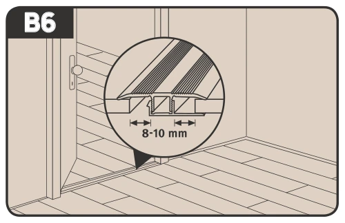
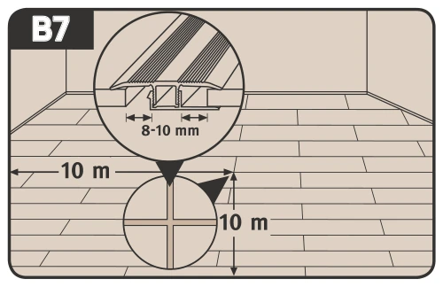
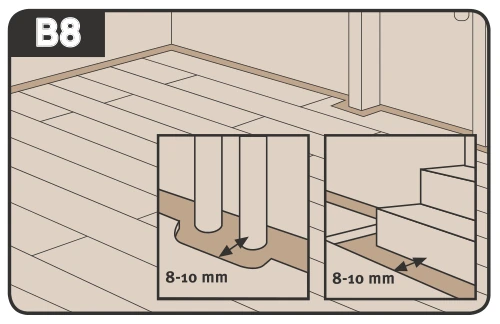
Выставьте первый ряд и наметьте раскрой
Начинайте с левого угла
Работайте при дневном свете. Расположите первую панель так, чтобы продольный и торцевой гребни смотрели к стенам, а оба паза — к вам. Выставьте распорки по рассчитанному зазору. При плавающей укладке панели соединяются замками CLIC it! и свободно лежат на подложке. Не приклеивайте и не привинчивайте их к основанию.
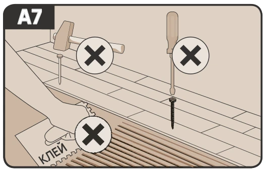
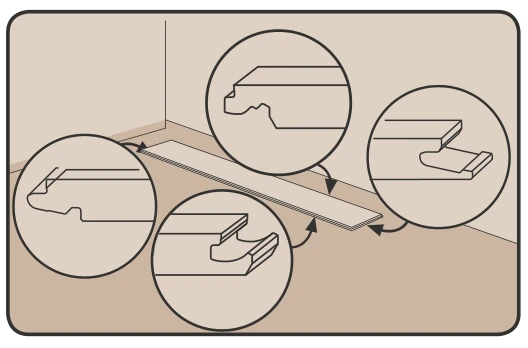
Сместите торцевые стыки минимум на 20 см
Проверяйте смещение между соседними рядами. Для начала или конца следующего ряда годится обрезок длиной от 20 см, если при этом сохраняется нужное смещение. Для декора под плитку и панелей с заводской фаской увяжите положение торцевых стыков с рисунком и линиями фасок.
Если замок не закрывается, разберите соединение и проверьте, чисты ли пазы и целы ли кромки.
Перенесите контур стены на последний ряд
Совместите размечаемую панель с предпоследним рядом. Перенесите на неё контур стены с помощью обрезка панели, оставив место для зазора. Для циркулярной, погружной или торцовочной пилы положите панель лицевой стороной вверх. Ножовочной пилой выполняйте раскрой с обратной стороны.
Соберите панели замком CLIC it!
Завод предлагает три способа. Выберите удобный и следуйте его последовательности. На рисунках показано, какую кромку завести первой и когда опускать панель.
На схемах сохранены обозначения производителя. Нажмите на рисунок, чтобы открыть его крупнее в новой вкладке.
Способ A. По одной панели под углом
Сначала соединяют торцы соседних панелей, затем замыкают длинную сторону.
- Соедините торцы панелей первого ряда под углом и подрежьте последнюю панель по длине. Выровняйте длинную кромку ряда. Для этого можно поставить временные направляющие из панелей у стены напротив торцевых стыков.
- Первую панель нового ряда заведите длинным гребнем в паз предыдущего ряда и опустите. У следующей панели сначала соедините торец с соседней панелью слева. Подведите панель вплотную к предыдущему ряду.
- Слегка приподнимите длинную кромку. Соседняя панель слева поднимется вместе с ней. Под углом заведите длинный гребень в паз и опустите панель до щелчка.
- Проверьте оба стыка. Небольшую щель можно убрать лёгким постукиванием через подбивочный брусок. После двух-трёх рядов снимите временные направляющие, выровняйте собранный участок и выставьте распорные клинья.


Способ B. Под углом с подбиванием торца
Длинную сторону соединяют под углом, торец — лёгким горизонтальным подбиванием.
Порядок первых двух рядов
На схеме цифрами отмечена очерёдность установки панелей.
- Первые два ряда удобно собирать попеременно. Положите первую панель в левом углу. Укоротите первую панель второго ряда для смещения стыков и заведите её длинной стороной в паз первой.
- Следующую панель второго ряда заведите длинным гребнем в паз, удерживая под углом. Придвиньте к торцу соседней панели, чтобы торцевой гребень попал в углубление её паза.
- Опустите панель и проверьте высоту торцевого гребня. Когда кромки совмещены, замкните торец лёгкими горизонтальными ударами через подбивочный брусок. Для выравнивания по высоте можно приложить панель вдоль длинной кромки.
- Вернувшись к первому ряду, заведите длинный паз следующей панели на гребень соседнего ряда и так же замкните торец. Чередуйте ряды, затем выровняйте их относительно стены и поставьте клинья. С третьего ряда двигайтесь последовательно, соединяя длинную сторону под углом и подбивая торец.


Сильные удары могут повредить торцевое соединение. Дефект иногда проявляется уже при эксплуатации.
Способ C. Целыми рядами
Сначала соединяют торцы панелей одного ряда, затем замыкают его длинную сторону.
- Первый ряд соберите по торцам, подрежьте последнюю панель. Выровняйте ряд с помощью временных направляющих из панелей у стены.
- Заведите длинный гребень первой панели следующего ряда в паз уложенного ряда, оставив замок приоткрытым. Остальные панели соедините по торцам. Следите, чтобы длинный гребень находился над нижней кромкой паза предыдущего ряда.
- Приподнимите первую панель за длинную сторону и лёгким нажатием замкните продольный стык. Продолжайте слева направо, пока весь ряд не ляжет в одну плоскость. Следите, чтобы собранные торцы не смещались.
- Проверьте соединения. Единичный небольшой зазор устраните лёгким постукиванием через брусок. После двух-трёх рядов удалите направляющие, выровняйте участок и установите распорные клинья.


Оформите примыкания и переходы
Стыки в коммерческих помещениях
Для покрытий классов 31–34 в коммерческих помещениях с повышенной нагрузкой от влаги завод рекомендует герметизировать стыки клеем ПВА класса D3. Нанесите клей на торцевой и продольный гребни. При сборке клей должен выступить вдоль всего шва. Проверьте плотность соединения и удалите излишки. Панели сохраняют плавающую укладку.
Трубы
Отметьте на панели центры труб. Диаметр каждого отверстия должен быть минимум на 16 мм больше наружного диаметра трубы. Сделайте пропилы к отверстиям под углом 45°. Уложите панель, верните выпиленную часть на место и приклейте её к панели.

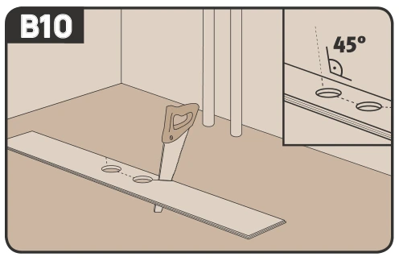
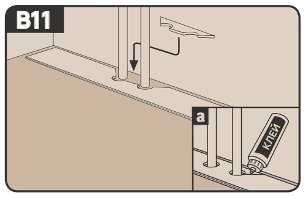
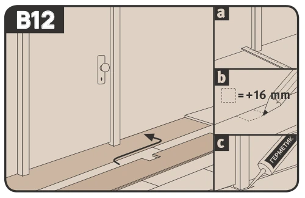
Дверные коробки
Согласуйте с заказчиком подрезку деревянной коробки на высоту панели с подложкой. Заведите панель под коробку, сохранив компенсационный зазор у стены. Для замыкания торца опустите панель, сдвиньте её под коробку и аккуратно подбейте через брусок.
Если коробку нельзя подрезать, вставьте в зазор у коробки уплотнитель из вспененного полиэтилена и заполните стык силиконом.
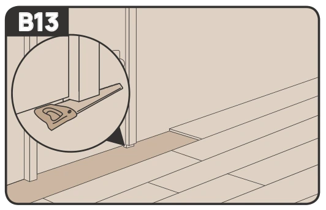

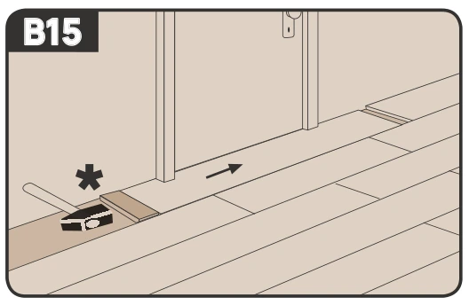
Плинтусы, профили и демонтаж
Завершите укладку установкой профилей и плинтусов по инструкциям к ним.
При разборке поднимите целый ряд под углом, чтобы освободить длинный замок. Затем поочерёдно разъедините торцевые замки, также поднимая панели под углом.
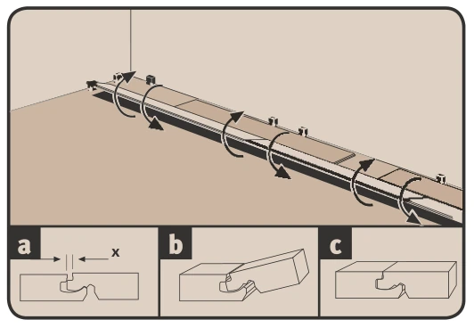


Перед установкой плинтусов уберите распорки. Крепите плинтус к стене без сильного прижима к полу. Оставьте компенсационные зазоры свободными от раствора, клея и жёсткого герметика.
Проверьте условия укладки в ванной
Когда укладка допустима
На стр. 5 завод исключает помещения с повышенной влажностью. В разделе 5 на стр. 14 он отдельно разрешает укладку в ванной без слива в полу, с ванной или душевым поддоном, если брызги попадают на пол лишь изредка и ненадолго. Это относится и к гостиничной ванной, которой пользуются только утром и вечером.
Покрытие исключено внутри душевых, в ванных с трапом, парных, саунах, общественных прачечных, бассейнах, на постоянно мокрых участках и на открытом воздухе.
До начала работ уточните у технического специалиста, подходит ли выбранный артикул, и согласуйте узлы примыкания.
Основание, гидроизоляция и сборка
- Допустимые основания для ванной — пригодная стяжка, в том числе с водяным подогревом, либо керамическая плитка. Выполните конструкционную гидроизоляцию по DIN 18534.
- Уложите специальную влагозащитную полиэтиленовую плёнку по всей площади. Заведите её на стены и герметизируйте примыкания уплотнительной лентой. В конструкции также предусмотрена подложка.
- Соберите панели одним из трёх способов CLIC it!. Для краёв и переходов используйте только алюминиевые профили. Щель между профилем и стеной герметизируйте эластичным составом.

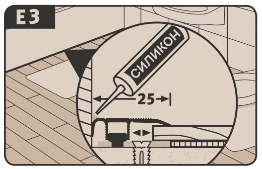
Приёмка и уход за полом
Перед сдачей пола
При сдаче проверьте, свободно ли открываются двери и сохранился ли зазор у встроенной мебели.
Укладка на подложку не требует паузы на отверждение монтажного клея. Если применялись выравнивающие смеси или герметики, соблюдайте сроки высыхания этих материалов.
Сохраните этикетки с артикулом и номером партии, чек, названия подложки и плёнки, акт работ, протокол измерения влажности и результаты проверки ровности. Приложите схему переходов и данные о подогреве. Отложите несколько панелей на случай ремонта.
Что рекомендует завод
- Положите коврик у входа. Для общественного помещения с непосредственным выходом на улицу предусмотрите грязезащитное покрытие заподлицо с полом.
- Поднимайте мебель при перестановке, приклейте войлочные накладки на ножки. Для кресел выбирайте мягкие ролики типа W или защитный коврик. Очищайте и своевременно заменяйте изношенные накладки и ролики.
- Пылесосьте насадкой для твёрдых полов с отключённой вращающейся щёткой. Протирайте хорошо отжатой мягкой тряпкой вдоль фасок. Пролитую воду сразу вытирайте насухо.
- Не применяйте пар, абразивы, обезжириватели, поломоечные, полировочные и шлифовальные машины. Не обрабатывайте всю поверхность воском, полиролью, герметиком или плёнкообразующими средствами.
- Для локального мелкого повреждения завод допускает ремонтную пасту или твёрдый ремонтный воск. При серьёзном повреждении поручите замену панели специалисту.